- 제목 복사 → 새 글 제목에 붙여넣기
- 태그 복사 → 태그 칸에 붙여넣기
- 본문 전체 복사 후 본문에 붙여넣기
- 이미지 전체 사진첩에 저장 (공유창에서 '이미지 저장')
- 에디터에서 【사진 번호】 줄을 찾아 그 자리에서 사진 버튼 → 같은 번호 파일 선택 (자리표시 줄은 지우기)
- 카테고리·대표이미지 확인 후 발행
③ 본문 전체 복사
붙여넣을 내용 미리보기
서울 중랑구 중화동 중화역 라온프라이빗 센트로는 아파트 176세대 중 113세대를 일반분양했습니다. 전용 84㎡ 가중평균 분양가는 12.51억 원, 브동산 분석 적정가격은 13.15억 원입니다. 1순위는 11월 17일에 끝났고 당첨자 발표는 11월 25일, 계약은 12월 7~9일입니다.
브동산 청약 언박싱 · 2026.11.25 공고 반영 업데이트
이 글 하단에는 네이버 쇼핑 커넥트 상품 링크가 있어요. 링크로 구매하면 브동산이 일정액의 수수료를 받아요.
1. 결론부터
84㎡는 1순위 6.7 대 1로 소형보다 경쟁이 약했다. 당첨됐다면 계약 전 동·층별 공급금액과 중도금 조건부터 확인하자.
【사진 01】 · 표
84㎡ 기준 브동산 분석 적정가격 13.15억, 실제 가중평균 분양가 12.51억, 예상 프리미엄 +6,380만이다. 적정가 대비 약 5% 저평가로 산출된다. 예상 프리미엄은 적정가격에서 분양가를 뺀 값이다.
【사진 02】 · 광역 조감도 외 1장
2. 왜 이 가격이 나왔을까
중랑구에서 2016년 이후 준공·500세대 이상 단지를 전수 조사해 생활권 이웃 1곳과 중심권 신축 대단지 1곳을 골랐다. 가장 가까운 리버센SK뷰롯데캐슬은 최근 1년 84㎡ 거래와 KB 시세가 없어 뺐다.
【사진 03】 · 표 외 1장
종합평점 62점 · 비교단지 70점 / 73점.
보정가격과 실제 분양가
【사진 04】 · 표 외 1장
연식 보정은 2029년 2월 입주 예정월 기준이다. 중화역 도보 2분은 공식 안내 기준이고, 상봉역 GTX-B는 개통 전이라 점수에 넣지 않았다. 주차 대수와 건폐율은 공개 자료에서 찾지 못해 중간 점수를 줬다.
출처: KB부동산 일반거래가(2026.11.20), 국토부 실거래, 청약홈 입주자모집공고
3. 브동산 한줄평
중화역 바로 앞 신축을 12억대에 잡는 자리다. 다만 176세대 소단지라 커뮤니티와 시세 방어력은 대단지보다 약하다는 점을 감안하자.
4. 지역 최근 분양단지
【사진 05】 · 표
청약홈 공고의 타입별 최고 공급금액 기준이다. 최근 1년 사이 중랑구에서 나온 다른 아파트 분양 공고는 없었다.
5. 분양 사이트 자료로 한 번에 보기
【사진 06】 · 위치도 외 3장
84㎡ 발코니 확장비는 2,350만 원이다. 공급대금은 계약금 10%, 중도금 60%, 잔금 30%로 나뉜다.
【사진 07】 · 단지 배치도 외 1장
【사진 08】 · 59㎡ 평면도
【사진 09】 · 70㎡ 평면도
【사진 10】 · 58㎡ 평면도 외 1장
【사진 11】 · 73T 복층 평…
【사진 12】 · 84T 복층 평…
【사진 13】 · 93T 복층 평…
【사진 14】 · 98T 복층 평…
【사진 15】 · 126T 복층 … 외 1장
6. 결론 — 접수 일정
【사진 16】 · 표
청약은 끝났고 12월 7~9일 정당계약이 남았다.
1순위는 53세대 모집에 1,052건이 접수됐다. 84㎡는 15세대에 101건(6.73 대 1), 당첨가점은 54~69점(평균 59.27점)이었다.
부동산 공부할 때 곁에 두면 좋은 것
[쇼핑커넥트 상품: 청약·부동산 투자 입문서 — 청약 제도와 가점, 투자 기초 공부]
[쇼핑커넥트 상품: 레이저 거리측정기 — 모델하우스·견본주택에서 방 크기 실측]
[쇼핑커넥트 상품: A4 서류 보관 파일 — 공고문·계약서·분양 서류 모아 두기]
④ 사진 자리표시 ↔ 파일
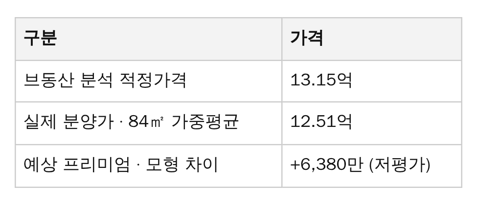

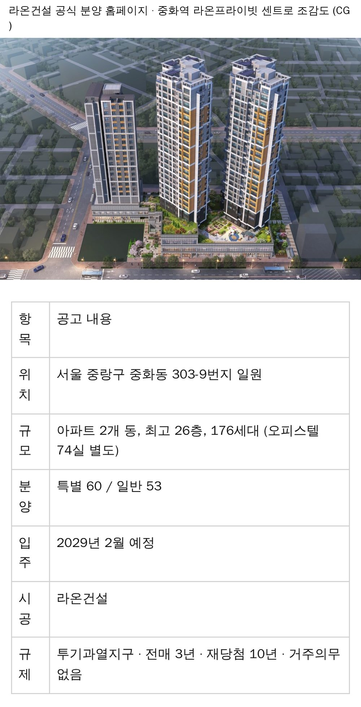

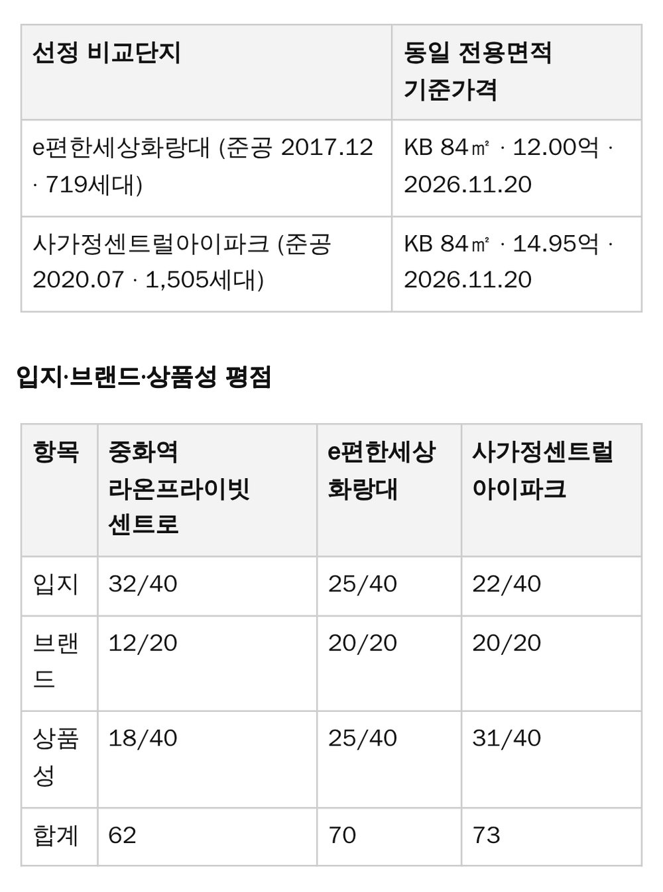

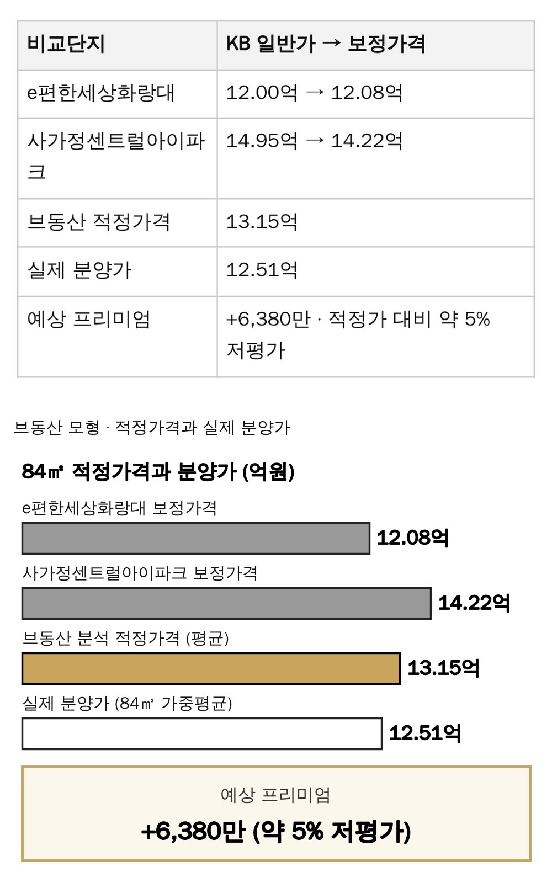

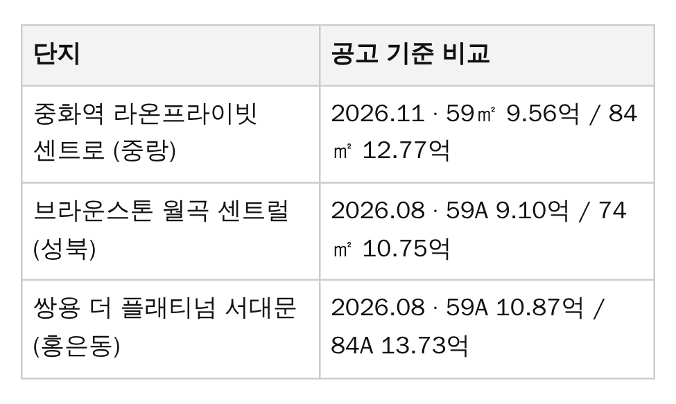

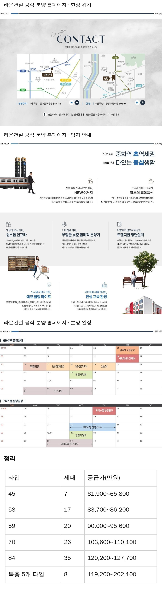

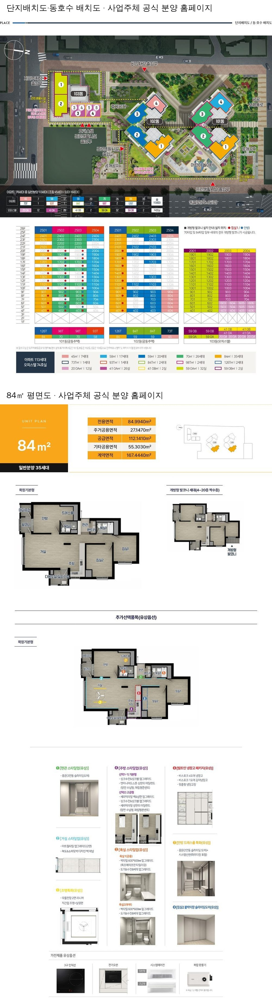

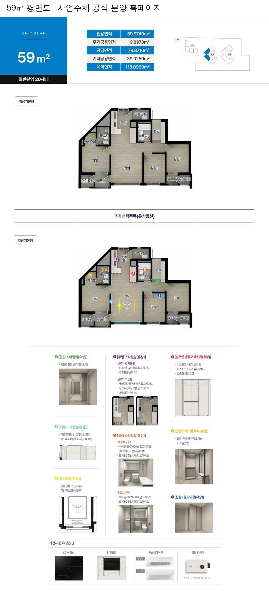

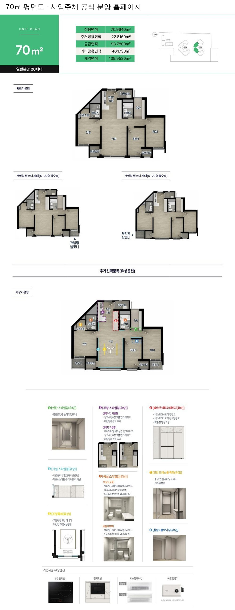

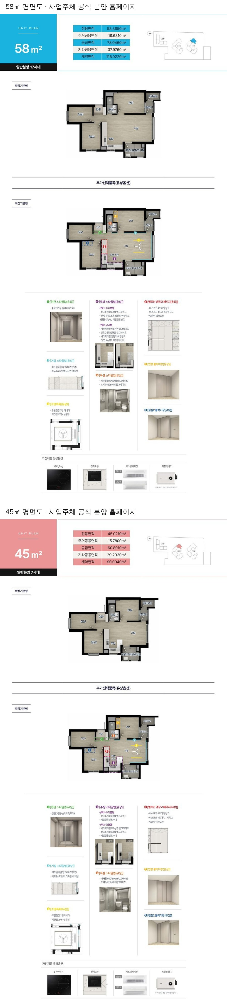

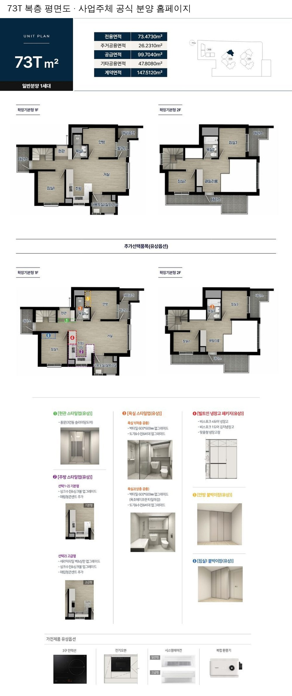

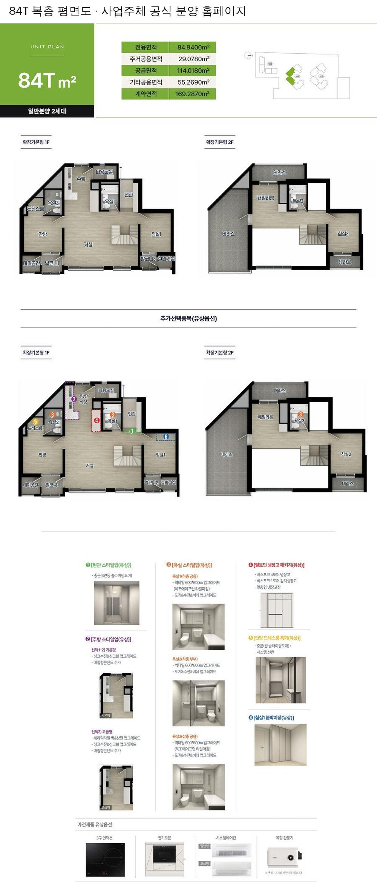

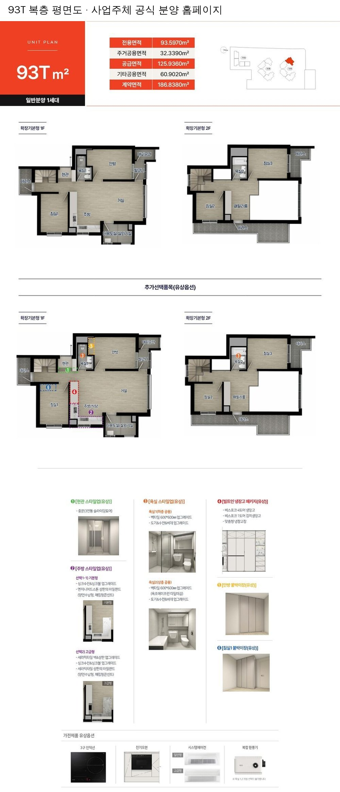

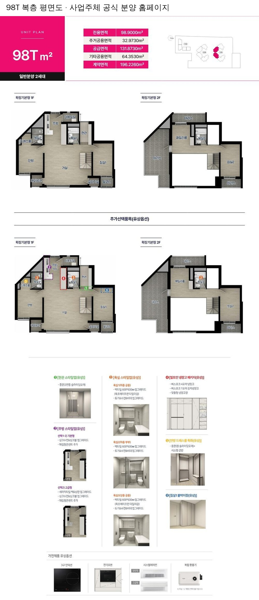

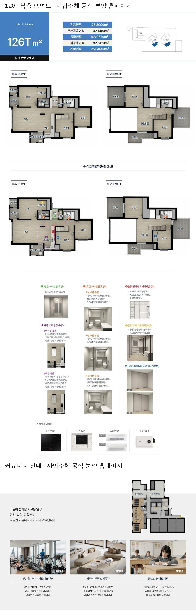

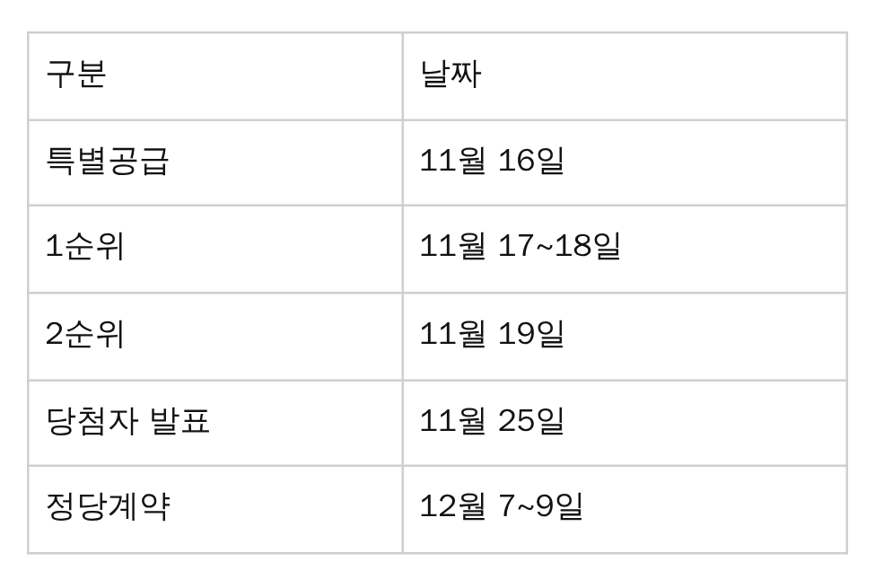

- 카테고리: 부동산이야기
- 제목 · 태그 입력 확인
- 대표 이미지(썸네일): official-aerial.jpg, official-siteplan.jpg
- 【사진】 자리표시 줄이 모두 지워지고 사진으로 바뀌었는지 훑어보기
- 발행 버튼